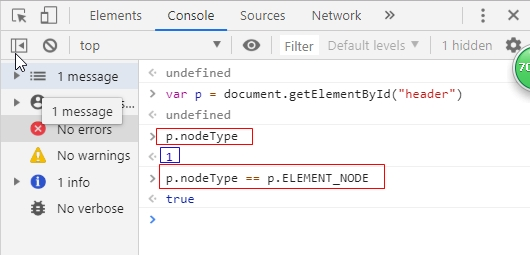

一、常用节点类型：
nodeType：节点类型
nodeName：节点名称
nodeValue：节点值
1、查看节点类型（控制台操作）：
获取元素：var p = document.getElementById("header");
查看节点类型：p.nodeType（返回1）
demo节点类型有12种，常用有3种，1表示元素节点、2表示属性节点、3表示文本节点
判断是否为元素节点：p.nodeType == p.ELEMENT_NODE

2、查看节点名称：p.nodeName
3、查看节点的值：p.nodeValue（标签，因此值为null）
二、3种常用节点类型
1、判断是否为元素节点：p.nodeType == p.ELEMENT_NODE
2、判断是否为属性节点：p.attributes
3、判断是否为文本节点:p.childNodes（返回当前元素的字子节点）获得标签中的属性
节点类型：p.childNodes[0].nodeType
验证节点类型是否正确：p.childNodes[0].nodeType == p.childNodes[0].TEXT_NODE
节点名称：p.childNodes[0].nodeName
节点中值：p.childNodes[0].nodeValue
文本长度：p.childNodes[0].length
<!DOCTYPE html>
<html lang="zh-cn">
<head>
<meta charset="UTF-8">
<title>JJavaScript常用节点类型</title>
</head>
<body>
<p id="header">JavaScript学习</p>
</body>
</html>